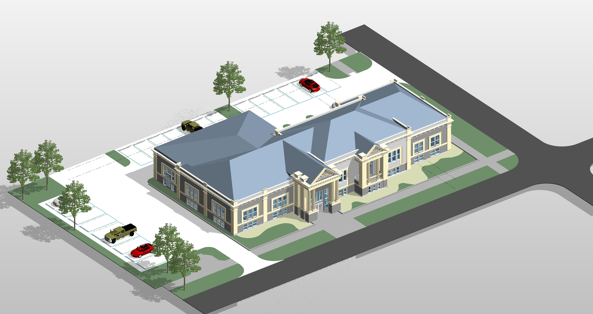

Bouwkosten in beeld
Een onderbouwde calculatie op basis van tekeningen, omschrijvingen en afgesproken uitgangspunten. Voor inzicht in de kostenopbouw van je project.
Bouwkundig inzicht. Helder gecalculeerd.
Van tekeningen en projectstukken naar inzicht in hoeveelheden en bouwkosten. Calcburo combineert digitale hulpmiddelen met menselijke bouwkundige controle, zodat je weet waarop je calculatie is gebaseerd.

Waar we je bij helpen
Een offerte voorbereiden, een ontwerp beoordelen of een project verder uitwerken? We stemmen de calculatie af op jouw vraag en de beschikbare stukken.
Een onderbouwde calculatie op basis van tekeningen, omschrijvingen en afgesproken uitgangspunten. Voor inzicht in de kostenopbouw van je project.
Maatvoering en hoeveelheden inzichtelijk gemaakt en per bouwonderdeel geordend. Een bruikbare basis voor begroting en inkoopvoorbereiding.
Documenten en gegevens geordend, met aandacht voor ontbrekende informatie en verschillen tussen stukken. Zo worden aannames bespreekbaar.
Wat je eraan hebt
Een calculatie is pas bruikbaar als duidelijk is wat erin zit. Daarom leggen we vooraf vast wat we onderzoeken en hoe we het opleveren.
De inhoud en het bestandsformaat stemmen we af op jouw opdracht.
Onze werkwijze
Je deelt de projectfase, je vraag en de beschikbare stukken. We bekijken welke informatie nodig is.
We spreken de werkzaamheden, uitgangspunten, planning en vergoeding af voordat we starten.
We analyseren de stukken, werken hoeveelheden en kosten uit en voeren een bouwkundige controle uit.
Je ontvangt de afgesproken uitwerking. We nemen uitgangspunten en aandachtspunten met je door.
Een bureau van deze tijd
We zetten AI in als hulpmiddel bij documentanalyse, datasortering en classificatie. Ook ondersteunt het de verwerking van maatvoering en hoeveelheden. De uitkomsten worden door mensen bouwkundig beoordeeld; aannames en onduidelijkheden vragen om inhoudelijk oordeel.
Technologie helpt bij het verwerken.
Mensen beoordelen de samenhang.
Goed om te weten
Denk aan tekeningen, een bestek of technische omschrijving en relevante projectinformatie. Tijdens de intake bepalen we samen wat nodig is. Ook als nog niet alles beschikbaar is, kun je je vraag voorleggen.
Beschrijf welk onderdeel je wilt laten uitwerken. We stemmen de afbakening en uitgangspunten vooraf met je af.
Dat hangt af van de omvang, complexiteit en beschikbare informatie. Je ontvangt vooraf een voorstel voor de afgesproken werkzaamheden.
Geef je gewenste planning door. We beoordelen de haalbaarheid en spreken de planning af voordat we starten.
AI ondersteunt de verwerking en ordening van informatie. De bouwkundige beoordeling en controle blijven mensenwerk.
Laten we kennismaken
Deel je project en je calculatievraag. Dan kunnen we bespreken welke uitwerking daarbij past.